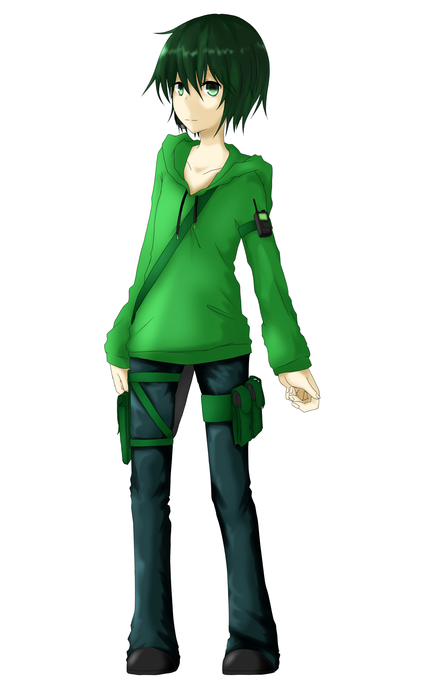
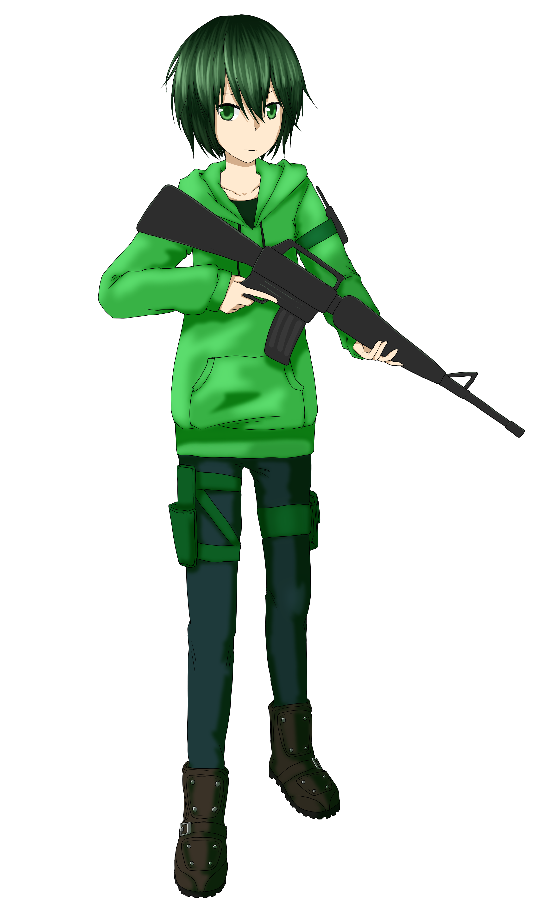
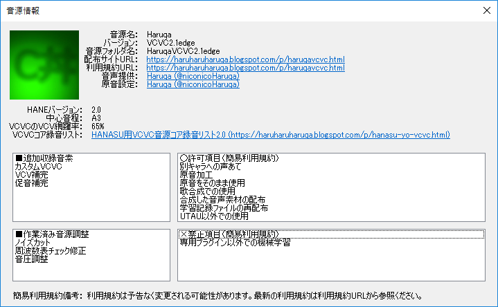

始めに
ご来訪ありがとうございます。
ここはHaruqaのUTAU音源とMMDモデルの配布サイトです。キャラクター設定と利用規約が確認できます。
ページ切り替えにjavascriptを使用しています。有効にしていない場合は有効にしてください。
ここはHaruqaのUTAU音源とMMDモデルの配布サイトです。キャラクター設定と利用規約が確認できます。
ページ切り替えにjavascriptを使用しています。有効にしていない場合は有効にしてください。
動作確認環境
FireFox
Google Chrome
公式立ち絵 ←旧 新→


各種リンク
更新履歴
2020/08/01 利用規約を更新
2020/02/23 無生物音源公開
2019/11/04 MMDモデルバージョンアップ
2019/07/23 MMDモデルバージョンアップ
2019/07/15 配布サイト公開開始
2020/02/23 無生物音源公開
2019/11/04 MMDモデルバージョンアップ
2019/07/23 MMDモデルバージョンアップ
2019/07/15 配布サイト公開開始
UTAU音源ダウンロード
連続音音源
HaruqaVCV - Ver.2.0HaruqaVCV - Ver.2.0venom
HaruqaVCV - Ver.1.1
HaruqaVCV - Ver.1.0
無生物連続音音源
Haruqa(無生物)_20200223HANASU用VCVC音源
HaruqaVCVC - Ver.2.1softHaruqaVCVC - Ver.2.1edge
協力
公式立ち絵：ひな太(@UPC6789) さまVCV1.0動画：秋月トウカ(@akitsuki0126) さま
VCV2.0音源テスト協力：bizz(@bizz_v) さま、炭酸水(@tansansuisui) さま
無生物音源クローズドベータ参加：CrazY(@crazy_toho) さま
連続音音源配布動画
Ver.2.0
Ver.2.0venom
Ver.1.1
Ver.1.0
無生物連続音音源配布動画
20200223
HANASU用VCVC音源配布動画
Ver.2.0soft
Ver.2.0edge
連続音音源簡易紹介
Ver.2.0の収録音階
C5 ：歌声
サフィックス：C5
A4 ：歌声
サフィックス：A4
G4 ：張り上げ発声
サフィックス：G4
F4 ：張り上げ発声、硬め
サフィックス：F4
D4 ：歌声
サフィックス：D4
B3 ：エッジ
サフィックス：（無）
G3 ：低音エッジ
サフィックス：G3
F3 ：歌声
サフィックス：F3
ext：仮声帯(デスボ)
サフィックス：ext
サフィックス：C5
A4 ：歌声
サフィックス：A4
G4 ：張り上げ発声
サフィックス：G4
F4 ：張り上げ発声、硬め
サフィックス：F4
D4 ：歌声
サフィックス：D4
B3 ：エッジ
サフィックス：（無）
G3 ：低音エッジ
サフィックス：G3
F3 ：歌声
サフィックス：F3
ext：仮声帯(デスボ)
サフィックス：ext
Ver.2.0venomの収録音階
G3 ：低音エッジ
サフィックス：G3
F3 ：歌声
サフィックス：F3
ext：仮声帯(デスボ)
サフィックス：（無）(v2.0:ext)
サフィックス：G3
F3 ：歌声
サフィックス：F3
ext：仮声帯(デスボ)
サフィックス：（無）(v2.0:ext)
Ver1.1の収録音階
C5 ：搾り出し発声 (v1.1)
サフィックス：C5
A4 ：歌声 (v1.1)
サフィックス：A4
G4 ：張り上げ発声 (v1.0 旧:↑↑)
サフィックス：G4
E4 ：歌声、ビブラート含み (v1.0 旧:↑)
サフィックス：E4
C#4：地声と歌声の中間 (v1.1)
サフィックス：C#4
C4 ：地声と歌声の中間 (v1.0)
サフィックス：（無）
A3 ：地声 (v1.1)
サフィックス：A3
G3 ：低音エッジ (v1.0 旧:↓)
サフィックス：G3
サフィックス：C5
A4 ：歌声 (v1.1)
サフィックス：A4
G4 ：張り上げ発声 (v1.0 旧:↑↑)
サフィックス：G4
E4 ：歌声、ビブラート含み (v1.0 旧:↑)
サフィックス：E4
C#4：地声と歌声の中間 (v1.1)
サフィックス：C#4
C4 ：地声と歌声の中間 (v1.0)
サフィックス：（無）
A3 ：地声 (v1.1)
サフィックス：A3
G3 ：低音エッジ (v1.0 旧:↓)
サフィックス：G3
Ver1.0の収録音階
G4：張り上げ発声
サフィックス：↑↑
E4：歌声、ビブラート含み
サフィックス：↑
C4：地声と歌声の中間
サフィックス：（無）
G3：低音エッジ
サフィックス：↓
サフィックス：↑↑
E4：歌声、ビブラート含み
サフィックス：↑
C4：地声と歌声の中間
サフィックス：（無）
G3：低音エッジ
サフィックス：↓
HANASU用VCVC音源簡易紹介
音源情報VCVC2.1soft
音源情報VCVC2.1edge

MMDモデルダウンロード
VRoidから変換調整モデル
Haruqa(VRM) - Ver.1.1.0_pmx1.2Haruqa(VRM) - Ver.1.1.0から変換したものです。
ray-mmdに調整していただいたものが同梱されています。
2019/11/04 調整しました。
協力
MMDモデル調整協力：CrazY(@crazy_toho) さまMMDモデル材質順指摘：ふわふわ中毒(@yukkuri_mikan) さま
表示サンプル
バニラMMD

ray-mmd

キャラクター詳細
キャラクターの詳細設定です。創作していただく上でヒントになれば幸いです。厳守する必要はありません。まれに変更されます。
性別
中性
声別
中声
年齢
不明
身長
基本162cm
使用している音源に合わせて可変
体重
基本52kg
使用している音源に合わせて可変
髪
黒～深緑
瞳
緑系
利き手
右手
利き足
右足
利き目
右目
服装
C#スキン
緑のパーカー、黒/紺/深緑っぽいズボン
持ち物
AR
ほか装備品
ナイフ
替えの弾倉
通信機
win10のタブレット
性格
真面目、ヤンデレ（稀によくある）
使用している音源に合わせて可変
一人称
私（わたし）
使用している音源や状況に合わせて可変
二人称
名前＋さん、知らない場合は、あなた
愛称がある場合は愛称呼び
口調
基本ですます調（丁寧語）もしくは、だである調
相手、使用している音源によって可変
口癖
盛大に、言及する、だが大丈夫だ
好きなもの
ゲーム実況、テイ様、ゲーム、プログラミング、動画作成、ストレイドさん
好きなゲーム
COD、FPS、TPS
嫌いなもの
運ゲー
なりたいもの
AI
なりたかったもの
SE
主食
動画についたコメント、ストレイドさん
利用規約
はじめに
Haruqa利用規約のご確認ありがとうございます。
以下の共通利用規約、音源利用規約、キャラクター利用規約、3Dモデル利用規約、n次創作利用規約、それぞれ対応する利用規約に同意の上ご利用下さいませ。
利用規約は予告なく改訂される可能性があります。あらかじめご了承くださいませ。
Haruqaを使用した場合、Haruqa利用規約に同意したものとみなします。
名称表記定義
Haruqa
キャラクター名, UTAU音源名, 音源提供者名, 管理者名
Haruqa(UTAU)
音源提供者ではなくUTAU音源/キャラクターとして明記するときに用いる表記
Haruqa(なま)
音源提供者の生声を明記するときに用いる表記
Haruqa(VRM)
Haruqa作成のHaruqaのVRMを明記するときに用いる表記
Haruqa(SSYQu)
HaruqaのSSYQu音源を明記する時に用いる表記
ニコニコ動画でのタグとしての意味
Haruqa
2020/08/01以前：投稿者名タグ。HaruqaはHaruqaが投稿していることを示す意図で使用しています
2020/08/01定義拡大：作業者名タグ。Haruqa自信による動画投稿もしくはHaruqaが何らかのかかわりを持った(音源を使用した/キャラクターを使用した/ソフトウェアを使用した/動画作成を手伝った/音声作成を手伝った等)動画に使用することとします。このタグを付加することは義務ではありません
Haruqa(UTAU)
音源名タグ。UTAU音源HaruqaのHaruqaを使用していることを示します。音源の推奨タグです
Haruqa(なま)
Haruqaの音源提供者の生声タグ。音源提供者の生声を使用していることを示します
Haruqa(はんなま)
UTAU音源Haruqaと音源提供者のユニット名タグ。カバーや実況等で共演した際つけられます
Haruqa(VRM)
2020/08/01廃止しました。Haruqaの音声無しに3Dモデルを使用し、タグを付けたい場合Haruqaタグが最適です
Haruqa(SSYQu)
2020/08/01追加：音源名タグ。SSYQu音源Haruqaを使用していることを示します
必要な利用規約パターンリスト
(下記省略していますが共通利用規約は全てのパターンで必要です)
本音源を使用した歌唱
音源利用規約
本音源を使用しているが別キャラクター/創作者の声代わり等、本キャラクター以外として喋らせている場合
音源利用規約
本音源を使用し本キャラクターが歌唱/喋っているかのような表現
(ビジュアルを使用しているか、していないかを問わない)
音源利用規約, キャラクター利用規約
本キャラクターのイラスト等ビジュアル表現
キャラクター利用規約
本3Dモデルを用いた静画/動画
キャラクター利用規約, 3Dモデル利用規約
本音源を使用した音声と本3Dモデルを使用した静画/動画を合わせる場合
音声利用規約, キャラクター利用規約, 3Dモデル利用規約
Haruqaがニコニコ動画に投稿した本音源をメインに用いた動画から音声を抜いて
本キャラクターのイラスト等で動画を作る場合
音源利用規約, キャラクター利用規約, n次創作利用規約
Haruqaがニコニコ動画に投稿した本音源をメインに用いた動画から音声を抜いて
本3Dモデルを用いて動画を作る場合
音源利用規約, キャラクター利用規約, 3Dモデル利用規約, n次創作利用規約
Haruqaがニコニコ動画に投稿した本音源をメインに用いた動画から音声を抜いて
Haruqaと関係無い動画を作る場合
音源利用規約, n次創作利用規約
ほか、上記パターンに当てはまらない場合、どれが当てはまるか不明な場合は管理者までご確認下さい
共通利用規約
禁止事項
・法令に違反する行為
・本音源や管理者、第三者など対象を問わずに、誹謗中傷や名誉毀損、またはそれを助長、その他不快感を与える行為
・宗教活動に利用する行為
・政治活動に利用する行為
・第三者への配慮（警告等）なく性的表現、グロテスク表現、暴力表現を創作物に含める行為
・他、管理者が不適当と判断する行為
管理者の事前の許可が必要な事項
・改変の有無を問わず商用利用（個人活動、同人活動を含む）/再配布/販売する行為
許可事項
・創作物をインターネット上に公開する行為（第三者の著作権などの権利を侵害する行為は許可されない）
・本来は宗教的行事であるが、日本において一般的に浸透している行事に利用、それらの表現を含める行為
・フィクションであり、フィクションであることを明記したうえでの、常識の範疇を逸脱しない宗教的表現、政治的表現を含める行為
・改変し本音源/キャラクターとして作品に利用する行為(ただし、改変していることを明記する事)
音源利用規約
許可事項
・本音源をUTAU/SSYQu以外のソフトウェアで利用する行為（管理者はその動作を保証しません）
・原音設定、周波数表などこの音源のために調整した設定ファイルを配布する行為
（管理者はその動作を保証しません。管理者以外から配布されたものを再配布する許可もこの規約に帰属し、永続的に許可されるものとします）
・本音源を利用して話している/喋っているかのような表現をする行為（俗に言うHANASU）
・本音源を別のキャラクターの声/創作者の声代わりとして利用する行為。ただし管理者による事前の許可がない場合、本音源の利用していることを明記する事
・本音源に音源提供者の生声を混ぜて合成する行為(俗に言う人力ボカロ)。ただし管理者による事前の許可がない場合、生声を混ぜていることを明記する事
キャラクター利用規約
補足事項
・音源を別のキャラクターの声として利用している場合や、楽曲への音源利用のみの場合はこの利用規約の適用外です
禁止事項
・他キャラクターとのカップリング表現、性的表現もしくはそれらを仄めかす表現をする行為
（本キャラクターを利用した創作物にそれら表現が含まれるが、本キャラクターが当事者でない場合はこの禁止事項の適応外です）
・本音源もしくは音源提供者以外の音声を当てて歌唱/喋っているような表現をする行為
許可事項
・第三者への配慮（警告等）をしたうえで、本キャラクターを利用した創作物にグロテスク表現、暴力表現を含める行為
・本キャラクターが同時に複数存在するような表現、それらに差異（性格、見た目）があるように見せる行為
3Dモデル利用規約
補足事項
・本3Dモデルを利用するにあたり上記キャラクター利用規約が同時に適用されます
・PMDE/PMXEの縛りにより、PMDE/PMXEで調整されたPMXを使用した作品を商用利用することは禁止されています。Haruqaが配布するPMXはPMDE/PMXEにて調整されています
共通禁止事項
・本3Dモデルからメッシュ/テクスチャ等を切り出し、別のキャラクターモデルへ流用する行為
PMX禁止事項
・別のファイル形式へ変換する行為
・VRChat等オンラインサービスへアップロードし利用する行為
PMX許可事項
・PMDE/PMXEで調整する行為
n次創作利用規約
前提事項
・n次創作利用許可の対象はHaruqaが作成しHaruqaがニコニコ動画に投稿したHaruqaメイン(本音源から合成した音声、音源提供者の生声のどちらかを問わない)の動画の音声に限る
・Haruqaの投稿物が一次創作物でない場合、一次創作元の利用規約等も確認しそれに従うこと
・n次創作物の投稿先はニコニコ動画に限る(身内間でのテスト投稿等でyoutubeの限定公開を利用する等公開先が制限される場合はそれを許可する)
・n次創作物の元となった動画とその動画のコンテンツツリーの親作品全てを、投稿した動画の親作品として登録すること(ただし、検索除けが一般的とされる界隈での創作物ではこの限りではなく、動画の中で動画IDを記載する事で免除とする)
・Haruqaの作成したものから創作された第三者の創作物、つまりn+1次創作物の利用はこの利用規約のみならずn+1次創作者の許諾を必要とする
禁止事項
・Haruqaがニコニコ動画以外のインターネット上の投稿サイトへ投稿した創作物からn次創作する行為
・Haruqa以外をメインに使用した動画から音声を抜いてn次創作する行為。ただし、Haruqaの音声のみを切り出す場合は許可される
許可事項
・本キャラクターのイラストや本3Dモデルで音声に動画をつける行為
・Haruqaとは関係のない動画を作成し音声を利用する行為
免責事項
Haruqaを利用したことで被ったいかなる損害も管理者は一切責任を負いません。
自己責任で利用をお願いいたします。
更新履歴
2017/02/23 HaruqaVCV - Ver.1.0 (利用規約第1版同梱) 配布開始
2017/05/23 HaruqaVCV - Ver.1.1 (利用規約第2版同梱) 配布開始
2019/07/15 利用規約第3版 配布サイト作成と同時に大幅に改定
2020/08/01 利用規約第4版 ニコニコ動画でのタグ定義を調整、SSYQuについて追加
管理者：Haruqa(@niconicoHaruqa)